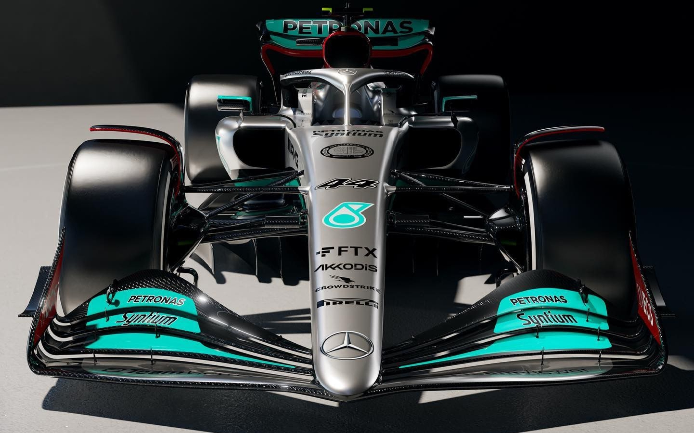
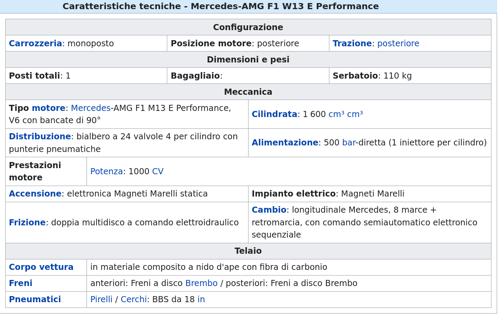

La Mercedes AMG F1 è una scuderia tedesca di Formula 1 con sede a Brackley, nel Regno Unito, sezione sportiva della casa automobilistica Mercedes. Dal 2020 viene iscritta al campionato mondiale di Formula 1 con il nome di Mercedes-AMG Petronas F1 Team, in base all'accordo di sponsorizzazione con l'azienda malese Petronas iniziato nel 2010. La Mercedes partecipò vittoriosamente al campionato mondiale di Formula 1 nel biennio 1954-1955 ottenendo due titoli mondiali piloti prima di ritirarsi. È poi ritornata in Formula 1 come fornitore di motori dal 1993. La scuderia è stata rifondata il 16 novembre 2009, quando la Daimler AG, in collaborazione con Aabar Investments Company, ha acquistato il 75,1% della Brawn GP (Mercedes: 45,1%; Aabar: 30%), e nel giro di pochi anni si è imposta come una delle squadre più vittoriose della storia della Formula 1, raggiungendo un totale di 8 titoli costruttori e di 9 titoli piloti. Nel 2011 è stato comunicato che le due società hanno acquistato anche la restante parte del pacchetto azionario posseduto da Ross Brawn. Il 19 novembre 2012 la Daimler AG conferma di essere divenuta l'unica proprietaria della squadra, avendo rilevato il restante 40% delle quote precedentemente appartenute ad Aabar Investments. Il 19 dicembre 2020 la proprietà della squadra viene divisa in tre parti uguali tra la Daimler AG, Ineos e Toto Wolff.
Monoposto 2022
La Mercedes-AMG F1 W13 E Performance è una monoposto di Formula 1 realizzata dalla Mercedes per gareggiare nel campionato mondiale di Formula 1 2022. La vettura è stata presentata il 18 febbraio 2022. La W13 torna dopo due anni a sfoggiare la tradizionale livrea argentata della Mercedes. Il nero delle vetture precendenti è tuttavia ancora presente, sebbene occupando solo le ali anteriore e posteriore e il fondo della vettura. Sono ancora presenti i dettagli azzurri del title sponsor Petronas, i quali colorano la parte superiore dei flap dell'alettone posteriore e parte di quelli dell'ala anteriore nonché la striscia che percorre lateralmente la vettura nella zona nera, e alcuni particolari rossi per via dello sponsor Ineos, come l'interno delle paratie dell'ala posteriore, la parte inferiore dei flap dell'alettone posteriore e la zona dell'airscope, divisa dall'argento tramite una sottile fascia nera. Il cofano motore è punteggiato di stelle a tre punte grigie, le stesse del logo Mercedes-Benz. Infine sulla W13 è ancora presente la stella a tre punte rossa dedicata a Niki Lauda e si trova sotto l'airscope. 